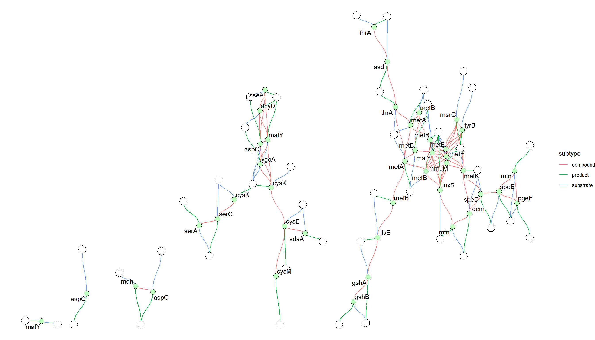
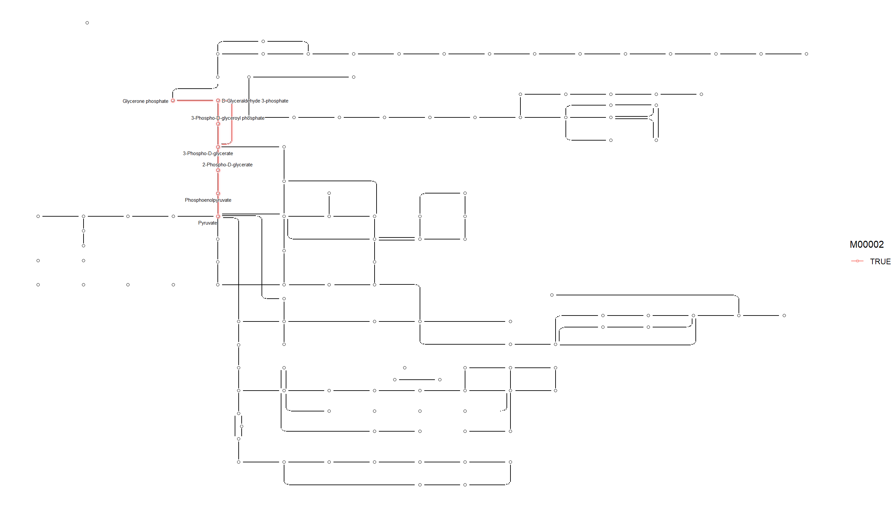
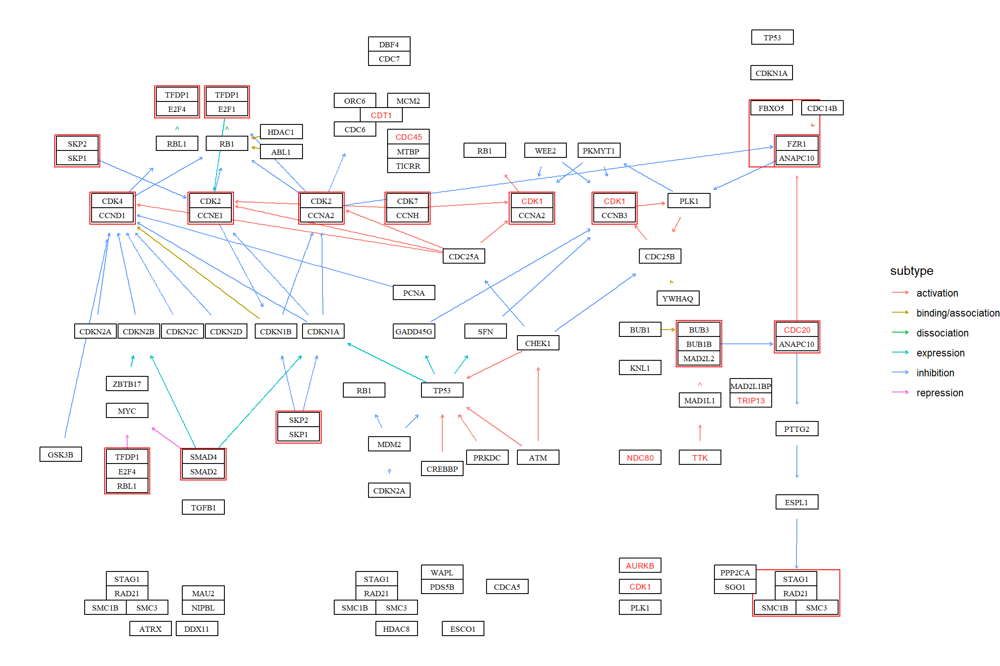

3 Pathway
Providing ggkegg a pathway ID, it fetches information, parse them and make ggraph object. Inside, parse_kgml function is used to return igraph or tbl_graph object.
library(ggkegg)
library(ggfx)
library(ggraph)
library(clusterProfiler)
library(dplyr)
library(tidygraph)
g <- ggkegg(pid="eco00270",
convert_org = c("pathway","eco"),
delete_zero_degree = TRUE,
return_igraph = TRUE)
gg <- ggraph(g, layout="stress")
gg$data$type |> unique()
#> [1] "map" "compound" "gene"
gg + geom_edge_diagonal(
aes(color=subtype,
filter=type!="maplink"))+
geom_node_point(
aes(filter= !type%in%c("map","compound")),
fill=gg$data[!gg$data$type%in%c("map","compound"),]$bgcolor,
color="black",
shape=21, size=4
)+
geom_node_point(
aes(filter= !type%in%c("map","gene")),
fill=gg$data[!gg$data$type%in%c("map","gene"),]$bgcolor,
color="black",
shape=21, size=6
)+
geom_node_text(
aes(label=converted_name,
filter=type=="gene"),
repel=TRUE,
bg.colour="white")+
theme_void()
3.1 Highlighting set of nodes and edges
If you want to obtain ko01230, sand highlight those components
involved in M00002, and show the corresponding compound names in the map,
we can write as follows using highligh_set_edges and highlight_set_nodes.
parse_kgml("ko01230") |>
process_line() |>
activate(nodes) |>
mutate(
compound=convert_id("compound"),
M00002=highlight_set_nodes(obtain_module("M00002")$components)) |>
activate(edges) |>
mutate(M00002=highlight_set_edges(obtain_module("M00002")$components)) |>
ggraph(x=x, y=y)+
geom_edge_link()+
with_outer_glow(geom_edge_link(aes(color=M00002, filter=M00002)),
colour="pink")+
geom_node_point(shape=21,aes(filter=type!="line"))+
with_outer_glow(geom_node_point(shape=21, aes(filter=M00002, color=M00002)),
colour="pink")+
geom_node_text(aes(label=compound, filter=M00002), repel=TRUE,
bg.colour="white", size=2)+
theme_void()
3.2 Visualize the result of enrichKEGG
It can visualize the functional enrichment analysis result using enrichKEGG from clusterProfiler. The enrich_attribute has boolean value whether the investigated gene is in pathway or not.
data(geneList, package='DOSE')
de <- names(geneList)[1:100]
enrichKEGG(de, pvalueCutoff=0.01) |>
ggkegg(convert_org = "hsa",
pathway_number=1) +
geom_edge_link(
aes(color=subtype),
arrow = arrow(length = unit(1, 'mm')),
start_cap = square(1, 'cm'),
end_cap = square(1.5, 'cm')) +
geom_node_rect(aes(filter=.data$undefined & !.data$type=="gene"),
fill="transparent", color="red")+
geom_node_rect(aes(filter=!.data$undefined &
.data$type=="gene"), fill="white", color="black")+
geom_node_text(aes(label=converted_name,
filter=.data$type == "gene"),
size=2.5,
color="black",family="serif")+
with_outer_glow(geom_node_text(aes(label=converted_name,
filter=.data$enrich_attribute),
size=2.5, color="red"),
colour="white",
expand=4)+
theme_void()